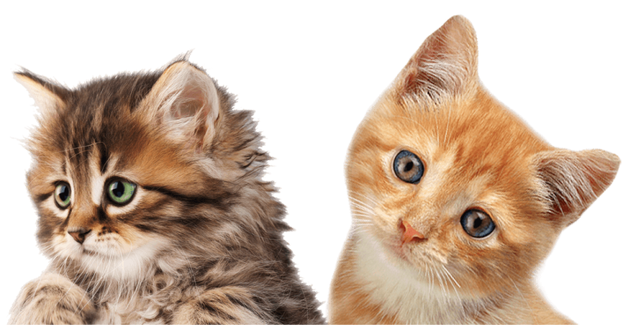
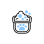
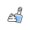
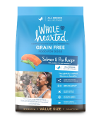
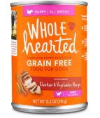
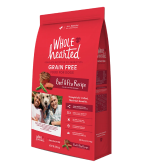
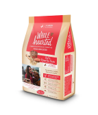

Recomencaciones.
Para un Mejor Cuidado
El cuidado de tu mascota puede ser difícil, por eso preparamos una sección para darte una mano en el cuidado del día a día.
Juguetes
Ellos son casaderos por naturaleza. Todo lo que se arrastre por el piso lo van a atrapar.

Higiene
Si a tu gato no le gusta el agua, bañalo con las espumas para ellos. Les encanta!!!

Limpieza
Armales su espacio con sus piedritas preferidas, lejos de su comida y agua.
Veterinaria
Es importante que visites con regularidad a tu veterinario. A veces es díficil detectar cuando esta enfermo.
Cuidados
Es muy importante mantener en buen estado la salud de tu gato. Por eso te contamos todo lo que tenes que saber.

Nutrición.
Tips Sobre Alimentos Para Tener Mejor Salud
Te contamos todo lo que tenes que saber para cuidar de la mejor forma a tu gato.

Más Saludable

Más Fuerte

Más Flaco

Más Tranquilo
Tips interesantes
Este video te muestra como los gatos...
¿Querés ser parte de nuestra comunidad?
¡Dejanos tu mail y enterate de todo!